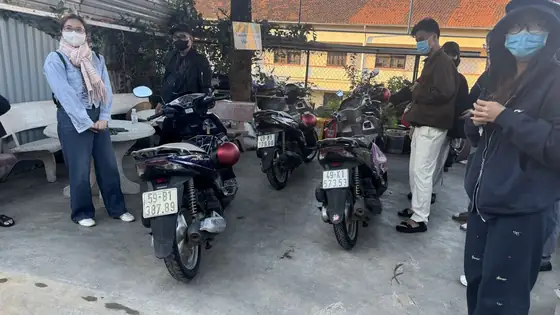

เกิ่วเดิ๊ตคือที่ไหน
เกิ่วเดิ๊ต (Cầu Đất) เป็นพื้นที่เกษตรบนที่สูงแถวซวนเจื่อง (Xuan Truong) และจ่ามหั่ญ (Tram Hanh) ทางตะวันออกของดาลัด ที่นี่ปลูกชามาตั้งแต่สมัยฝรั่งเศสในช่วงทศวรรษ 1920 ปัจจุบันเนินเขาเต็มไปด้วยแนวต้นชาโค้งเป็นระเบียบ สลับกับป่าสนและแปลงผัก บนสันเขาใกล้ ๆ ยังมีกังหันลมผลิตไฟฟ้าตั้งอยู่ ด้วยความที่อยู่สูง ตอนเช้ามักมีหมอก และวันที่โชคดีหุบเขาด้านล่างจะเต็มไปด้วยทะเลหมอก
ไกลแค่ไหนและไปทางไหน
ไร่ชาอยู่ห่างจากใจกลางเมืองประมาณ 20–25 กม. ขี่สกู๊ตเตอร์ราว 40–60 นาที ถ้าขี่ตอนมืดจะนานกว่านั้นนิดหน่อย เส้นทางที่นิยมคือมุ่งไปทางตะวันออกผ่านจ๋ายหมัด (Trai Mat) แล้วผ่านซวนเทอ (Xuan Tho) และซวนเจื่อง เป็นถนนชนบทคดเคี้ยว ขึ้นเนินไม่ชันมาก ค้นหา "Cầu Đất" หรือ "đồi chè Cầu Đất" ใน Google Maps และดาวน์โหลดแผนที่ออฟไลน์ไว้ก่อน เพราะบนเขาสัญญาณอาจอ่อน ดูไอเดียเพิ่มเติมได้ที่หน้า เส้นทางขี่มอเตอร์ไซค์รอบดาลัด
ควรออกกี่โมง
พระอาทิตย์ขึ้นที่ดาลัดโดยทั่วไปอยู่ระหว่างประมาณ 5:15 ถึง 6:00 แล้วแต่ฤดู ถ้าอยากไปทันแสงนุ่ม ๆ ก่อนรุ่งสางและได้จุดดี ๆ ควรออกจากตัวเมืองราว 4:30–4:45 แสงแรกหลังเนินเขามักเป็นช่วงที่สวยที่สุด จึงไม่ควรไปถึงตรงเวลาพระอาทิตย์ขึ้นพอดี หลังพระอาทิตย์ขึ้นแล้ว ไร่ชาจะสวยไปอีกราวหนึ่งชั่วโมง เหมาะกับการถ่ายรูปก่อนแดดแรง
ช่วงไหนมีทะเลหมอก
ไม่มีใครรับประกันทะเลหมอกได้ ขึ้นอยู่กับความชื้น ลม และอากาศเมื่อคืน โดยทั่วไปเช้าที่เย็นและลมสงบหลังฝนตกมีโอกาสมากที่สุด ช่วงปลายฤดูฝนถึงต้นฤดูแล้ง (ประมาณตุลาคมถึงมกราคม) จึงเป็นช่วงยอดนิยมของสายล่าทะเลหมอก กลางฤดูแล้งฟ้ามักใส หมอกน้อยกว่าแต่มองได้ไกลและถนนแห้ง ถามเราได้ตั้งแต่เย็นวันก่อน เราจะเล่าให้ฟังว่าช่วงเช้าสัปดาห์นั้นเป็นอย่างไร
ควรเตรียมอะไร
- เสื้อแจ็กเก็ตกันหนาว กางเกงขายาว และถุงมือ ก่อนรุ่งสางอากาศหนาวกว่าในเมืองมาก และลมตอนขี่รถยิ่งทำให้หนาวขึ้น
- เสื้อกันฝนไว้ใต้เบาะ และรองเท้าหุ้มส้น ทางเดินระหว่างแนวชาอาจเป็นโคลน
- โทรศัพท์ที่ชาร์จเต็ม พาวเวอร์แบงก์เล็ก ๆ และน้ำดื่ม
- เงินสดติดตัวเล็กน้อย บางไร่และจุดชมวิวเก็บค่าเข้าเล็กน้อย
เคารพไร่ของชาวบ้าน
ไร่ชาเป็นพื้นที่ทำกินจริง ไม่ใช่สวนสาธารณะ เดินเฉพาะทางที่มีอยู่ อย่าเหยียบหรือเด็ดใบชา อย่าบินโดรนเหนือที่ดินของคนอื่นโดยไม่ขออนุญาต และนำขยะกลับไปด้วย ถ้ามีประตูหรือจุดขายตั๋วให้เข้าทางนั้น
ขี่ตอนมืดอย่างปลอดภัย
- เวียดนามขับรถชิดขวา ต่างจากที่ไทย ตอนเช้ามืดยังง่วงอยู่ ยิ่งต้องตั้งสติให้ดี
- ขี่ช้า ๆ ตอนมืดและมีหมอก เปิดไฟหน้า ชิดขวา และระวังรถบรรทุกผักที่วิ่งตั้งแต่เช้าตรู่
- หลังฝนตกถนนเปียกและลื่น ลดความเร็วก่อนเข้าทุกโค้ง
- อย่าจอดกลางถนนเพื่อถ่ายรูป ให้เข้าข้างทางให้สุดในจุดที่คนอื่นมองเห็น
- ห้ามดื่มแอลกอฮอล์หรือเบียร์ขณะขี่ และปฏิบัติตามกฎจราจรเวียดนามอย่างเคร่งครัด
ต่อเป็นทริปวนช่วงเช้า
ขากลับแวะวัดลิงห์เฟื้อก (Linh Phuoc) ที่จ๋ายหมัด ห่างจากใจกลางเมืองประมาณ 8 กม. ซึ่งขึ้นชื่อเรื่องการตกแต่งด้วยโมเสกจากเศษกระเบื้องและแก้ว แล้วกลับเข้าเมืองกินมื้อเช้าสาย ๆ ปลายฤดูใบไม้ร่วงอาจเห็นดอกทานตะวันป่าสีเหลืองข้างทางด้วย

ควรเช่ารถแบบไหน
ไปกลับประมาณ 50 กม. และมีทางขึ้นเนิน จึงควรใช้สกู๊ตเตอร์น้ำมัน Honda Air Blade 125cc ขี่สบายที่สุดสำหรับเส้นนี้ มอเตอร์ไซค์ไฟฟ้ามีแบต 2 ก้อน (ประมาณ 60–70 กม.) แต่กำลังน้อย ขึ้นเนินยาวช้าและแบตหมดเร็ว จึงไม่เหมาะ ร้านเปิดตั้งแต่ 4:30 น. แต่สะดวกที่สุดคือรับรถไว้ตั้งแต่วันก่อน รถทุกคันราคา 150,000 VNDต่อวัน ไม่ต้องวางมัดจำเงินสด (ฝากพาสปอร์ตหรือบัตรประชาชน) ฟรีหมวกกันน็อกและที่จับโทรศัพท์ รถน้ำมันเติมน้ำมันให้ 1 ลิตร ทักเราทาง WhatsApp ได้เลย เราช่วยวางแผนทริปชมพระอาทิตย์ขึ้นให้
คำถามที่พบบ่อย
ไร่ชาเกิ่วดั๊ตห่างจากดาลัดแค่ไหน?
ประมาณ 20–25 กม. จากตัวเมือง ขี่สกูตเตอร์ราว 40–60 นาที ตอนมืดนานกว่าเล็กน้อย
ดูพระอาทิตย์ขึ้นควรออกกี่โมง?
ออกจากตัวเมืองราว 4:30–4:45 เพื่อไปถึงตอนแสงนุ่มก่อนพระอาทิตย์ขึ้น
ขี่สกูตเตอร์ไฟฟ้าไปได้ไหม?
ไม่แนะนำ: ไปกลับประมาณ 50 กม. มีทางขึ้นเขายาว รถมีแบต 2 ก้อน (ประมาณ 60–70 กม.) แต่กำลังน้อย ขึ้นเขาช้าและแบตหมดเร็ว Honda Air Blade 125cc สะดวกที่สุด
มีคำถามเรื่องเที่ยวดาลัดไหม?
เราช่วยแนะนำเส้นทาง สภาพอากาศ และจองรถให้ได้ — ทักมาทาง WhatsApp ได้เลย
ทักทาง WhatsAppเช่ามอเตอร์ไซค์ในดาลัด
Honda Vision, Honda Air Blade 125cc และสกูตเตอร์ไฟฟ้า — วันละ 150,000 VND ไม่ต้องวางเงินมัดจำ หมวกกันน็อกฟรี ส่งรถถึงโรงแรมเมื่อเช่า 2 วันขึ้นไป